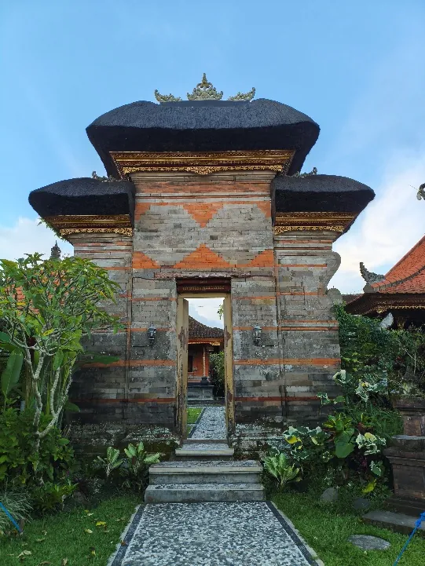
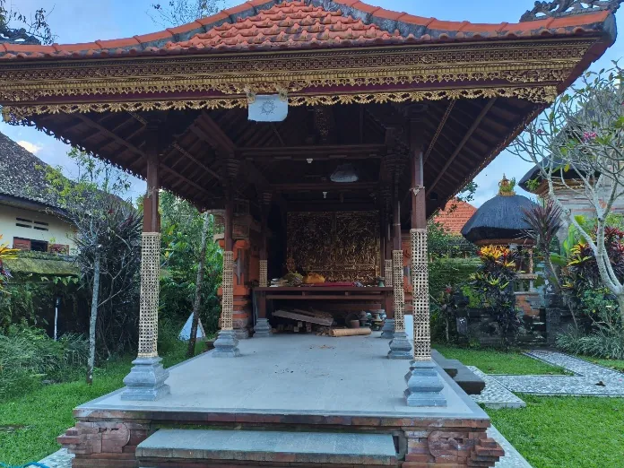
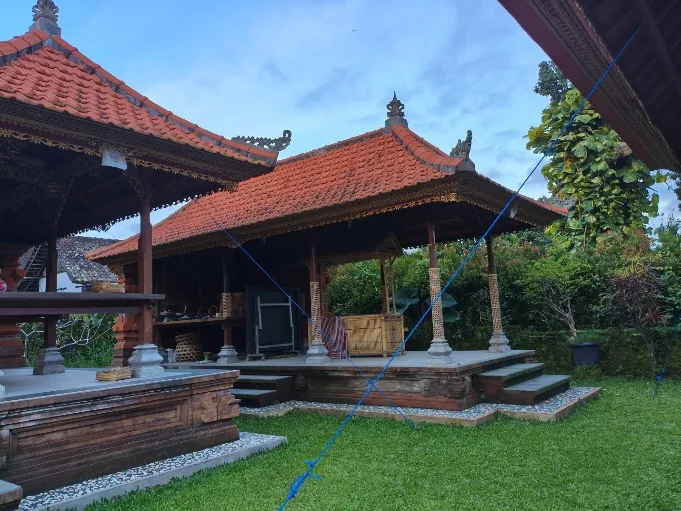
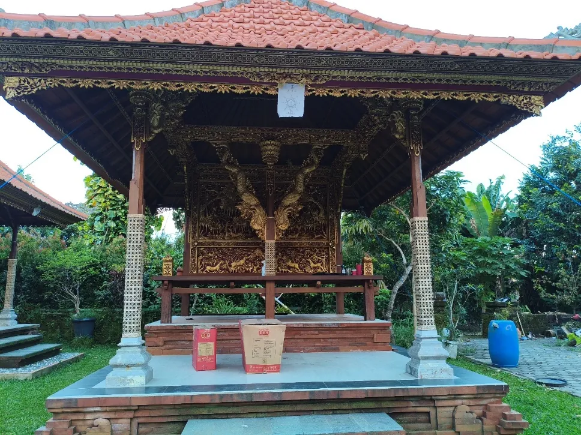
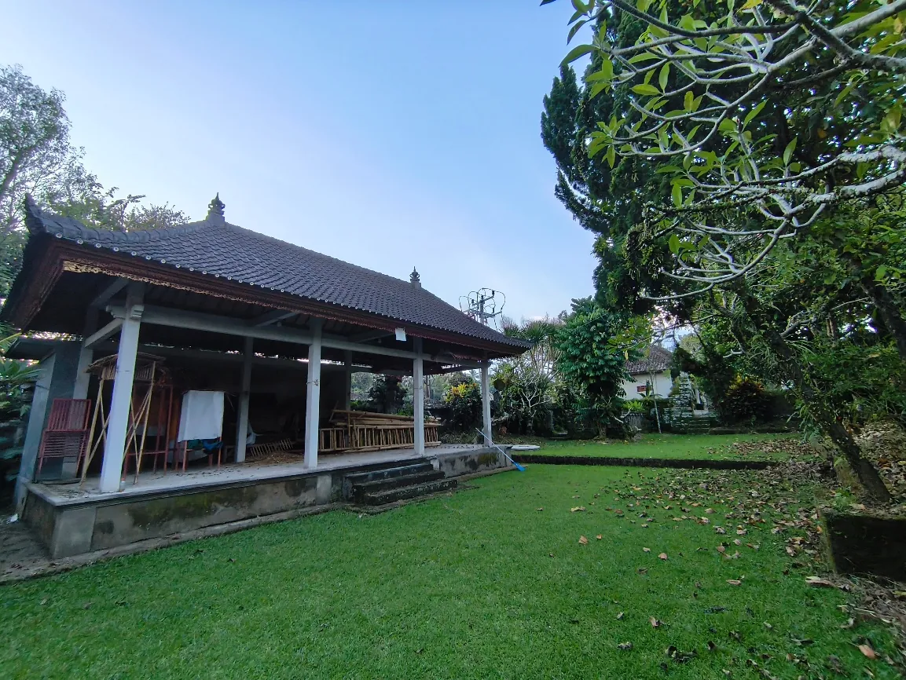

INFORMASI PURI
Mengenal Ruang & Bangunan
Informasi mengenai bagian-bagian Puri Ageng Marga disusun berdasarkan dokumentasi dan hasil wawancara. Kenali fungsi, cerita, dan bagian penting yang terdapat di dalam kompleks Puri.
JELAJAH PURI
Setiap ruang punya cerita
Bagian ini menjadi pusat informasi untuk mengenal bangunan dan area Puri Ageng Marga. Terdapat 15 bagian yang telah terdokumentasi dalam bahan penelitian. Keterangan ditampilkan sesuai data yang tersedia dan dapat dikembangkan kembali ketika informasi tambahan diperoleh.

Bale Agung
Tempat peristirahatan raja. Bentuknya menyerupai L dan memiliki kisah tentang kedekatan raja dengan istrinya yang berasal dari kalangan Jaba.
LIHAT DALAM VIRTUAL TOUR →
Bale Bandung
Dahulu digunakan untuk menyimpan senjata. Saat ini senjata dipindahkan ke merajan dan bale digunakan untuk upacara manusa yadnya.
LIHAT DALAM VIRTUAL TOUR →
Bale Astapita
Berfungsi sebagai tempat rapat dan tempat untuk masyarakat.
LIHAT DALAM VIRTUAL TOUR →
Bale Murda
Digunakan untuk acara pitra yadnya Raja.
LIHAT DALAM VIRTUAL TOUR →
Kori Jaba Tengah & Semanggen
Kori untuk keluar-masuk Jaba Tengah dan Semanggen.
LIHAT DALAM VIRTUAL TOUR →
Merajan & Puri Agung
Area yang dicatat sebagai tempat sembahyang seluruh masyarakat Marga.
LIHAT DALAM VIRTUAL TOUR →
Bale Seka Ulu
Khusus untuk istri raja yang seorang Jaba.
LIHAT DALAM VIRTUAL TOUR →
Bale Kembar
Digunakan untuk ngaben dan mepreteka.
LIHAT DALAM VIRTUAL TOUR →
Bale Sekaulu
Berfungsi untuk menempatkan mayat seorang Gusti dari kerajaan Marga.
LIHAT DALAM VIRTUAL TOUR →
Bale Gong
Bangunan yang terdokumentasi sebagai Bale Gong.
LIHAT DALAM VIRTUAL TOUR →
Bale Mancagina
Bangunan Bale Mancagina yang menjadi bagian dari kompleks Puri.
LIHAT DALAM VIRTUAL TOUR →
Kori
Kori yang menarik karena daun pintunya masih merupakan daun pintu lama.
LIHAT DALAM VIRTUAL TOUR →
Pura Agung
Pura Agung (Jaba Sisi), masuk ke Jaba Tengah, dengan merajan di bagian tengah.
LIHAT DALAM VIRTUAL TOUR →
Bale Pelik
Berfungsi untuk melihat masyarakat yang melakukan aktivitas di Puri. Terdapat kulkul/jendoingan yang menurut keterangan dahulu suaranya dapat terdengar sampai Kediri, Tabanan.
LIHAT DALAM VIRTUAL TOUR →
Tempat Masuk
Area masuk menuju kompleks Puri yang terdokumentasi dalam bahan bangunan.
LIHAT DALAM VIRTUAL TOUR →FAQ
Pertanyaan yang mungkin muncul
Beberapa pertanyaan umum yang dapat membantu pengunjung memahami isi website dan informasi Puri Ageng Marga.
Apa yang dapat diketahui melalui bagian Informasi?
Bagian Informasi digunakan untuk mengenal bangunan dan area Puri Ageng Marga, termasuk fungsi serta keterangan yang tersedia dari dokumentasi penelitian.
Ada berapa bangunan atau area yang terdokumentasi?
Saat ini terdapat 15 bangunan atau area yang telah didokumentasikan dalam bahan yang digunakan untuk website.
Apakah setiap bangunan memiliki keterangan lengkap?
Belum semuanya. Beberapa bangunan sudah memiliki keterangan fungsi atau cerita, sedangkan bagian lainnya masih ditampilkan berdasarkan dokumentasi yang tersedia.
Apakah bangunan-bangunan tersebut dapat dilihat melalui Virtual Tour?
Website menyediakan halaman Virtual Tour sebagai pintu masuk menuju pengalaman 360°. Keterhubungan setiap bangunan dengan titik tertentu di dalam tour dapat dikembangkan setelah data dan hotspot 3DVista tersedia.
Apa saja peninggalan yang masih tersisa di Puri Ageng Marga?
Berdasarkan hasil wawancara, masih terdapat tiga pusaka, satu peti tombak, kulkul, cap kerajaan, baju kebesaran, serta dua foto raja yang berhasil ditemukan kembali.